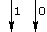
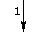
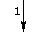
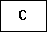

Manchester Adder Online help
How to Run
-
Two numbers are added in this program. The two numbers can be given in
the boxes named as A and B.
-
Numbers can be given in either bin (binary) or dec (decimal)
number system.
-
Next, the total number of bits in the adder should be specified in Total
Bits field.
-
In this adder, the total number of bits are divided into a number of groups
and a separating device (buffer) is placed between each of these
groups. So, in the field Buffer Distance, you should specify the
distance between two buffers. In other words, you need to provide there
the number of bits present between two consecutive buffers. This buffer
distance will be limited by the maximum number of switches that can be
placed in cascade and that number is technology dependent.
-
After that, you have to specify a few delays in the Signal Delays
section. Those delays are:
-
Delay to calculate Si once the Ci is available (Ci
to Si).;
-
Delay to calculate Si once the Ai is available (Ai
to Si).
-
delay of a single Switch or Transmission Gate (Switch).
-
delay of a single Buffer (Buffer).
-
delay of a single basic AND/OR gate (Basic Gate).
-
delay of a single EX-OR gate (EX-OR Gate).
Format of Output
After giving all the above mentioned inputs, when you click on the
Compute button, in the right frame of the page, you can see a diagram
of the manchester adder circuit and the timing data.
-
In the topmost diagram, a number of rectangular blocks are shown in cascade.
Those are the blocks which can find out the sum of two bits and a carry-in.
The following figure shows that in such a block, two inputs are 1 and 0
and the sum output is 1 (assuming no carry).

 

-
Below that, we show the carry generation blocks with proper carry-in and
carry-out bits. from each such carry-generator circuit, we have shown a
path to the adder block also. We also put the buffers in between two carry
generation blocks (wherever needed). Each such carry generation block is
represented by following figure:

At the bottom, we show the time taken to generate eachi sum bit.